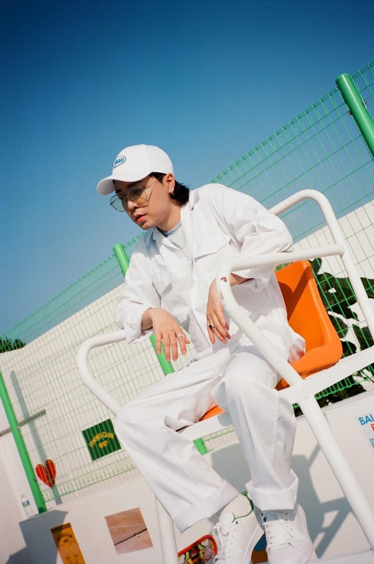

안정적인 박자감과 기본기, 그리고 뚜렷하고 탄탄한 발성을 통한 유려한 플로우를 구사하는 한편 감성적인 랩까지
소화하는 넓은 스펙트럼을 가지고 있는 래퍼다.
쇼미더머니4에 출연했으며 팀은 AOMG였다.
오버그라운드에선 루이와 함께 긱스로 활동. 데뷔와 함께 음원차트를 석권하며 대단한 인기를 끌었다. 2012년에는 믹스테잎 Good Time을 발표했다. [12] 쇼미더머니4에 출연한 후 귀염상과 걸맞지 않는 출중한 실력 덕분에 꽤 많은 팬층이 형성되었으며 트위터와 인스타그램을 통해 이를 실감할 수 있다. 2019년 3월 31일 그랜드라인을 탈퇴한 뒤 테이크원, DJ Dopsh와 함께 하프타임 레코즈를 설립했다. 다음날 테이크원과 정식으로 팀을 이뤄 정규앨범 [Good Time For The Team]을 발매했다. 2020년, 쇼미더머니 9에 출연하였고 머쉬베놈과 약 1000만원여 격차를 벌리며 최종 우승했다.
여담이지만 아이러니하게 쇼미더머니 4 당시 본인이랑 패자부활전을 같이 했고 본인이 이겼던 비와이는 5년의 시간이 흐른 지금, 쇼미더머니 8, 9의 프로듀서로 출연할 정도로 기반을 잡았다. 하지만 릴보이 역시 프로듀서의 자리에 올라도 이상하지 않을 만큼 경력과 실력이 있는 실력파 래퍼이다.